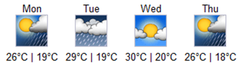
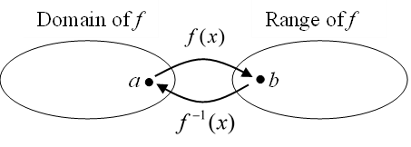
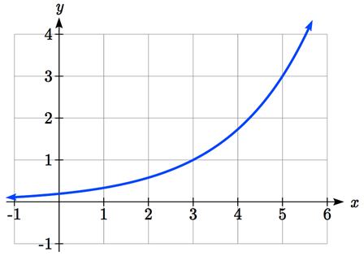

A fashion designer is traveling to Milan for a fashion show. He asks his assistant, Betty, what 75 degrees Fahrenheit is in Celsius, and after a quick search on Google, she finds the formula \(C=\frac{5}{9}(F-32)\text{.}\) Using this formula, she calculates \(\frac{5}{9}(75-32)\approx 24\) degrees Celsius. The next day, the designer sends his assistant the week’s weather forecast for Milan and asks her to convert the temperatures to Fahrenheit.

A weather forecast for four days with temperatures in Celsius.
Figure1.7.1.
At first, Betty might consider using the formula she has already found to do the conversions. After all, she knows her algebra, and can easily solve the equation for F after substituting a value for C. For example, to convert 26 degrees Celsius, she could write: \(26=\frac{5}{9}(F-32)\text{,}\)
\(26\times \frac{9}{5}=F-32\text{,}\)
\(F=26\times\frac{9}{5}+32\approx79\text{.}\)
After considering this option for a moment, she realizes that solving the equation for each of the temperatures would get awfully tedious, and realizes that since evaluation is easier than solving, it would be much more convenient to have a different formula, one which takes the Celsius temperature and outputs the Fahrenheit temperature. This is the idea of an inverse function, where the input becomes the output, and the output becomes the input.
Definition1.7.2.Inverse Function.
If \(f(a)=b\text{,}\) then a function \(g\) is an inverse of \(f\) if \(g(b)=a\text{.}\) The inverse of a function \(f\) is typically notated \(f^{-1}\text{,}\) which is read “f inverse”, so equivalently, if \(f(a)=b\) then \(f^{-1}(b)=a\text{.}\)
Important: The superscripts -1 used in the notation for inverse functions is simply a notation, and does not designate an exponent or power of -1.
Example1.7.3.
If for a particular function, \(f(2)=4\text{,}\) what do we know about the inverse?
The inverse function reverses which quantity is input and which quantity is output, so if \(f(2)=4\text{,}\) then \(f^{-1}(4)=2\text{.}\)
Alternatively, if you want to re-name the inverse function \(g\text{,}\) then \(g(4) = 2\text{.}\)
Checkpoint1.7.4.
Given that \(h^{-1}(6)=2\text{,}\) what do we know about the original function \(h(x)\text{?}\)
Notice that the original function and the inverse function undo each other. If \(f(a)=b\text{,}\) then \(f^{-1}(b)=a\text{,}\) returning us to the original input. More simply put, if you compose these functions together you get the original input as your answer. \(f^{-1}(f(a))=a\) and \(f(f^{-1}(b))=b\text{.}\)

A diagram showing two circles, one labeled domain of f with a point labeled a in the circle, and the other labeled Range of f with a point labeled b in the circle. An arrow labeled f of x points from a to b. An arrow labeled f inverse of x points from b to a.
Figure1.7.5.
Since the outputs of the function \(f\) are the inputs to \(f^{-1}\text{,}\) the range of \(f\) is also the domain of \(f^{-1}\text{.}\) Likewise, since the inputs to \(f\) are the outputs of \(f^{-1}\text{,}\) the domain of \(f\) is the range of \(f^{-1}\text{.}\)
Basically, like how the input and output values switch, the domain and ranges switch as well. But be careful, because sometimes a function doesn’t even have an inverse function, or only has an inverse on a limited domain. For example, the inverse of \(f(x)=\sqrt{x}\) is \(f^{-1}(x)=x^{2}\text{,}\) since a square “undoes” a square root, but it is only the inverse of \(f(x)\) on the domain \([0,\infty)\text{,}\) since that is the range of \(f(x)=\sqrt{x}\text{.}\)
Example1.7.6.
The function \(f(x)=2^{x}\) has domain \((-\infty,\infty)\) and range \((0,\infty)\text{,}\) what would we expect the domain and range of \(f^{-1}\) to be?
We would expect \(f^{-1}\) to swap the domain and range of \(f\text{,}\) so \(f^{-1}\) would have domain \((0,\infty)\) and range \((-\infty,\infty)\text{.}\)
Example1.7.7.
A function \(f(t)\) is given as a table below, showing distance in miles that a car has traveled in \(t\) minutes. Find and interpret \(f^{-1}(70)\text{.}\)
\(t\) (minutes)
30
50
70
90
\(f(t)\) (miles)
20
40
60
70
The inverse function takes an output of \(f\) and returns an input for \(f\text{.}\) So, in the expression \(f^{-1}(70)\text{,}\) the 70 is an output value of the original function, representing 70 miles. The inverse will return the corresponding input of the original function \(f\text{,}\) 90 minutes, so \(f^{-1}(70)=90\text{.}\) Interpreting this, it means that to drive 70 miles, it took 90 minutes.
Alternatively, recall the definition of the inverse was that if \(f(a)=b\) then \(f^{-1}(b)=a\text{.}\) By this definition, if you are given \(f^{-1}(70)=a\) then you are looking for a value \(a\) so that \(f(a)=70\text{.}\) In this case, we are looking for a \(t\) so that \(f(t)=70\text{,}\) which is when \(t = 90\text{.}\)
Checkpoint1.7.8.
Using the table below,
\(t\) (minutes)
30
50
70
90
\(f(t)\) (miles)
20
40
60
70
Find and interpret the following
\(\displaystyle f(60)\)
\(\displaystyle f^{-1}(60)\)
Example1.7.9.
A function \(g(x)\) is given as a graph below. Find \(g(3)\) and \(g^{-1}(3)\)

An increasing curving-up graph, passing through 3 comma 1 and 5 comma 3
Figure1.7.10.Graph of \(g(x)\)
To evaluate \(g(3)\text{,}\) we find 3 on the horizontal axis and find the corresponding output value on the vertical axis. The point \((3, 1)\) tells us that \(g(3)=1\text{.}\) To evaluate \(g^{-1}(3)\text{,}\) recall that by definition \(g^{-1}(3)\) means \(g(x) = 3\text{.}\) By looking for the output value 3 on the vertical axis we find the point \((5, 3)\) on the graph, which means \(g(5) = 3\text{,}\) so by definition, \(g^{-1}(3)=5\text{.}\)
Checkpoint1.7.11.
Using the graph in the example above
find \(g^{-1}(1)\)
estimate \(g^{-1}(4)\)
Example1.7.12.
Returning to our designer’s assistant, find a formula for the inverse function that gives Fahrenheit temperature given a Celsius temperature.
A quick Google search would find the inverse function, but alternatively, Betty might look back at how she solved for the Fahrenheit temperature for a specific Celsius value, and repeat the process in general. \(C=\frac{5}{9}(F-32)\text{,}\)
\(\frac{9}{5}C=F-32\text{,}\)
\(F=\frac{9}{5}C+32\text{.}\)
By solving in general, we have uncovered the inverse function. If
It is important to note that not all functions will have an inverse function. Since the function \(f^{-1}\) takes an output of \(f\) and returns an input of \(f\text{,}\) in order for \(f^{-1}\) to itself be a function, then each output of \(f\) (input to \(f^{-1}\)) must correspond to exactly one input of \(f\) (output of \(f^{-1}\)). You might recall that this is the definition of a one-to-one function.
Definition1.7.13.Properties of Inverses.
In order for a function to have an inverse, it must be a one-to-one function.
In some cases, it is desirable to have an inverse for a function even though the function is not one-to-one. In those cases, we can often limit the domain of the original function to an interval on which the function is one-to-one, then find an inverse only on that interval.
Subsection1.7.2Conclusions
Example1.7.14.Important Topics of this Section.
Definition of an inverse function
Composition of inverse functions yield the original input value
Not every function has an inverse function
To have an inverse a function must be one-to-one
Restricting the domain of functions that are not one-to-one.
Checkpoint1.7.15.
[Exercise Answers]
\(\displaystyle h(2)=6\)
\(f(60)=50\text{.}\) In 60 minutes, 50 miles are traveled.
\(f^{-1}(60)=70\text{.}\) To travel 60 miles, it will take 70 minutes.
\(\displaystyle g^{-1}(1)=3\)
\(g^{-1}(4)=5.5\) (this is an approximation – answers may vary slightly